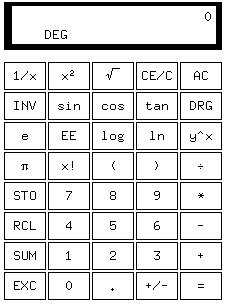

| [ Team LiB ] |
|
11.4 Tradeoffs between CLI and Visual InterfacesThe CLI style of early Unix has retained its utility long after the demise of teletypes for two reasons. One is that command-line and command-language interfaces are more expressive than visual interfaces, especially for complex tasks. The other is that CLI interfaces are highly scriptable—they readily support the combining of programs, as we discussed in detail in Chapter 7. Usually (though not always) CLIs have an advantage in concision as well. The disadvantage of the CLI style, of course, is that it almost always has high mnemonic load (low ease), and usually has low transparency. Most people (especially non-technical end users) find such interfaces relatively cryptic and difficult to learn.
Database queries are a good example of the kind of interface for which pushing buttons is not just burdensome but extremely limiting. Neither keystroke commands to a full-screen character interface nor GUI gestures on a graphic display can express typical actions in the problem domain as expressively or concisely as typing SQL direct to a server. And it is certainly easier to make a client program utter SQL queries than it would be to have it simulate a user clicking a GUI! On the other hand, many non-technical database users are so resistant to having to remember SQL syntax that they prefer a less concise and less expressive full-screen or GUI interface. SQL is a good example for illustrating another point. The most powerful CLIs are not ad-hoc collections of commands, but imperative minilanguages designed along the lines we described in Chapter 8. These minilanguages are the highest-power, highest-complexity end of the CLI spectrum; they maximize expressiveness, but minimize ease. They are difficult to use and generally need to be discreetly veiled from ordinary end-users, but unbeatable when the capability and flexibility of the interface is the most important thing. When properly designed, they also score high on scriptability. Some applications, unlike database queries, are naturally visual. Paint programs, Web browsers, and presentation software make three excellent examples. What these application domains have in common is that (a) transparency is extremely valuable, and (b) the primitive actions in the problem domain are themselves visual: "draw this", "show me what I'm pointing at", "put this here". The flip side of paint programs is that it is difficult to capture relationships within the pictures they are manipulating. It takes careful, thoughtful design to give the user any handle on the structure of images with repeated elements, for example. This is a general design problem with visual interfaces. In Chapter 6 we looked at the Audacity sound file editor. Its interface design succeeds because it does a particularly clean job of mapping its audio application domain onto a simple set of visual representations (borrowed from equalizer displays on stereos). It does this by thoroughly following through the consequences of a single translation: sounds to waveform images. The visual operations are not a mere grab-bag of low-level tweaks; they are all tied to that translation. In applications that are not naturally visual, however, visual interfaces are most appropriate for simple one-shot or infrequent tasks performed by novice users (a point the database example illustrates). Resistance to CLI interfaces tends to decrease as users become more expert. In many problem domains, users (especially frequent users) reach a crossover point at which the concision and expressiveness of CLI becomes more valuable than avoiding its mnemonic load. Thus, for example, computing novices prefer the ease of GUI desktops, but experienced users often gradually discover that they prefer typing commands to a shell. CLIs also tend to gain utility as problems scale up and involve more in the way of canned, procedural and repetitive actions. Thus, for example, a WYSIWYG desktop-publishing program is usually the easiest route to composing relatively small and unstructured documents such as business letters. But for complex book-sized documents that are assembled from sections and may require many global format changes or structural manipulation during composition, a minilanguage formatter such as troff, Tex, or some XML-markup processor is usually a more effective choice (see Chapter 18 for more discussion of this tradeoff). Even in domains that are naturally visual, scaling up the problem size tends to tilt the tradeoff toward a CLI. If you need to fetch and save one Web page from a given URL, point and click (or type and click) is fine. But for Web forms, you're going to use a keyboard. And if you need to fetch and save the pages corresponding to a given list of fifty URLs, a CLI client that can read URLs from standard input or the command line can save you a lot of unnecessary motion. As another example, consider modifying the color table in a graphic image. If you want to change one color (say, to lighten it by an amount you will only know is right when you see it) a visual dialogue with a color-picker widget is almost mandatory. But suppose you need to replace the entire table with a set of specified RGB values, or to create and index large numbers of thumbnails. These are operations that GUIs usually lack the expressive power to specify. Even when they do, invoking a properly designed CLI or filter program will do the job far more concisely. Finally (as we observed earlier on) CLIs are important in facilitating using programs from other programs. A GUI graphics editor that can handle making a batch of thumbnails for a list of files probably does it with a plugin written in a scripting language, calling an internal CLI of the graphics editor (as in the GIMP's script-fu facility). Unix environments bring the value of CLIs into sharper relief precisely because their IPC facilities are rich, have low overhead, and are easily accessible from user programs. The explosion of interest in GUIs since 1984 has had the unfortunate effect of obscuring the virtues of CLIs. The design of consumer software, in particular, has become heavily skewed toward GUIs. While this is a good choice for the novice and casual users that constitute most of the consumer market, it also exacts hidden costs on more expert users as they run up against the expressiveness limits of GUIs—costs which steadily increase as the users take on more demanding problems. Most of these costs derive from the fact that GUIs are simply not scriptable at all—every interaction with them has to be human-driven. Gentner & Nielsen sum up the tradeoff very well in The Anti-Mac Interface [Gentner-Nielsen]: "[Visual interfaces] work well for simple actions with a small number of objects, but as the number of actions or objects increases, direct manipulation quickly becomes repetitive drudgery. The dark side of a direct manipulation interface is that you have to manipulate everything. Instead of an executive who gives high-level instructions, the user is reduced to an assembly-line worker who must carry out the same task over and over". Noted science-fiction writer Neal Stephenson made the same point, less directly but more entertainingly, in his brilliant and discursive essay In the Beginning Was the Command Line [Stephenson]. A typical Unix old hand's take on this problem is rather less theoretical:
For the long haul, then—for serving both casual and expert users, for cooperating with other computer programs, and whether the problem domain is naturally visual or not—support for both CLI and visual interfaces is important. Unix's history positions it well to meet both sets of needs. After presenting an indicative case study, we will examine the characteristic design patterns that the Unix tradition has evolved to meet them. 11.4.1 Case Study: Two Ways to Write a Calculator ProgramTo be more concrete, let us contrast how the GUI and CLI styles can be usefully applied to the design of a simple interactive program: a desk calculator. Our examples for contrast are dc(1)/bc(1) and xcalc(1). The original Unix desk calculator program, first distributed with Version 7, was dc(1)—a reverse-Polish-notation calculator that could handle unlimited-precision arithmetic. Later, an algebraic (infix notation) calculator language, bc(1), was implemented on top of dc (we used the relationship between these programs as a case study in Chapter 7, and again in Chapter 8). Both of these programs use a CLI. You type an expression on standard input, you press enter, and the value of the expression is printed on standard output. The xcalc(1) program, on the other hand, visually simulates a simple calculator, with clickable buttons and a calculator-style display. Figure 11.1. The xcalc GUI. The xcalc(1) approach is simpler to describe because it mimics an interface with which novice users will be familiar; the man page says, in fact, "The numbered keys, the +/– key, and the +, –, *, /, and = keys all do exactly what you would expect them to". All the capabilities of the program are conveyed by the visible button labels. This is the Rule of Least Surprise in its strongest form, and a real advantage for infrequent and novice users who will never have to read a man page to use the program. However, xcalc also inherits the almost complete non-transparency of a calculator; when evaluating a complex expression, you don't get to see and sanity-check your keystrokes—which can be a problem if, say, you misplace a decimal point in an expression like (2.51 + 4.6) * 0.3. There's no history, so you can't check. You'll get a result, but it won't be the result of the calculation you intended. With the dc(1) and bc(1) programs, on the other hand, you can edit mistakes out of the expression as you build it. Their interface is more transparent, because you can see the calculation that is being performed at every stage. It is more expressive because the dc/bc interpreter, not being limited to what fits on a reasonably-sized visual mockup of a calculator, can include a much larger repertoire of functions (and facilities such as if/then/else, stored variables, and iteration). It also incurs, of course, a higher mnemonic load. Concision is more of a toss-up; good typists will find the CLI more concise, while poor ones may find it faster to point and click. Scriptability is not a toss-up; dc/bc can easily be used as a filter, but xcalc can't be scripted at all. The tradeoff between ease for novices and utility for expert users is very clear here. For casual use in situations where a mental-arithmetic error check is not hard, xcalc wins. For more complex calculations where the steps must not only be correct but must be seen to be correct, or in which they are most conveniently generated by another program, dc/bc wins. |
| [ Team LiB ] |
|